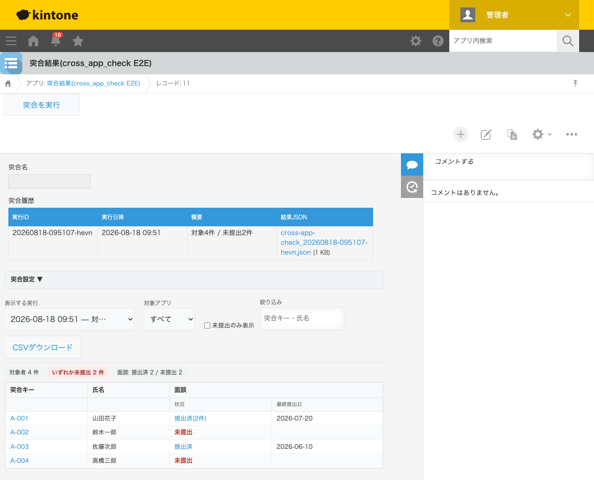
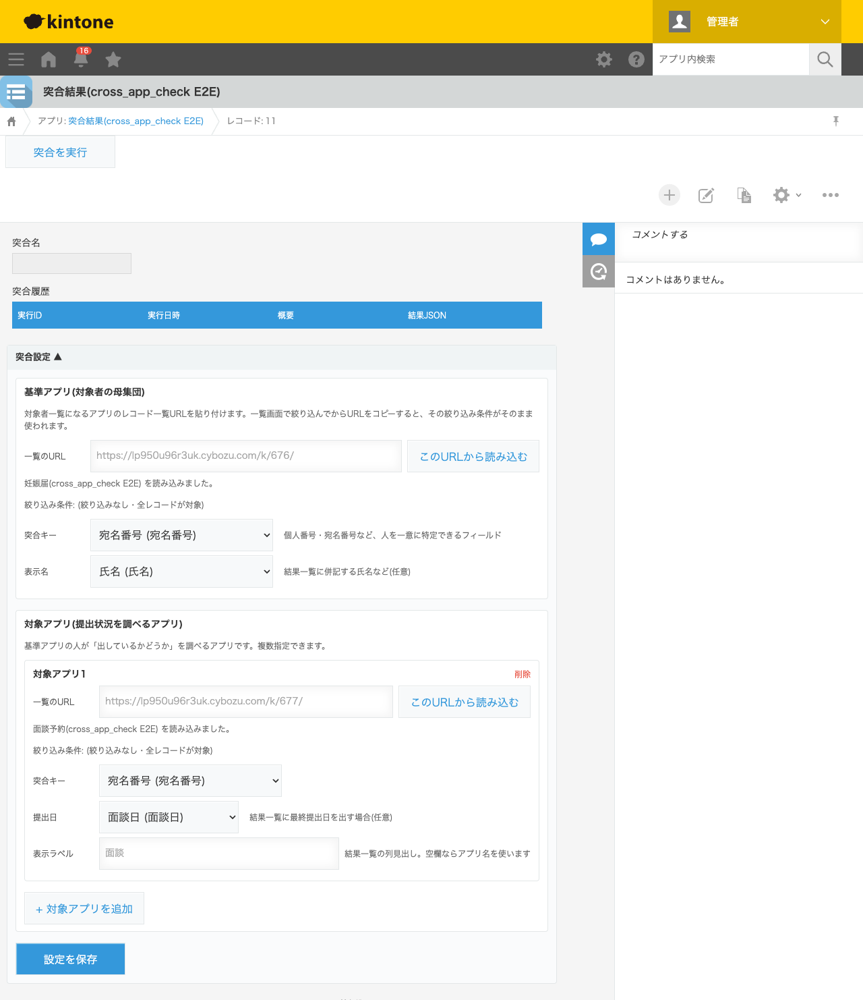
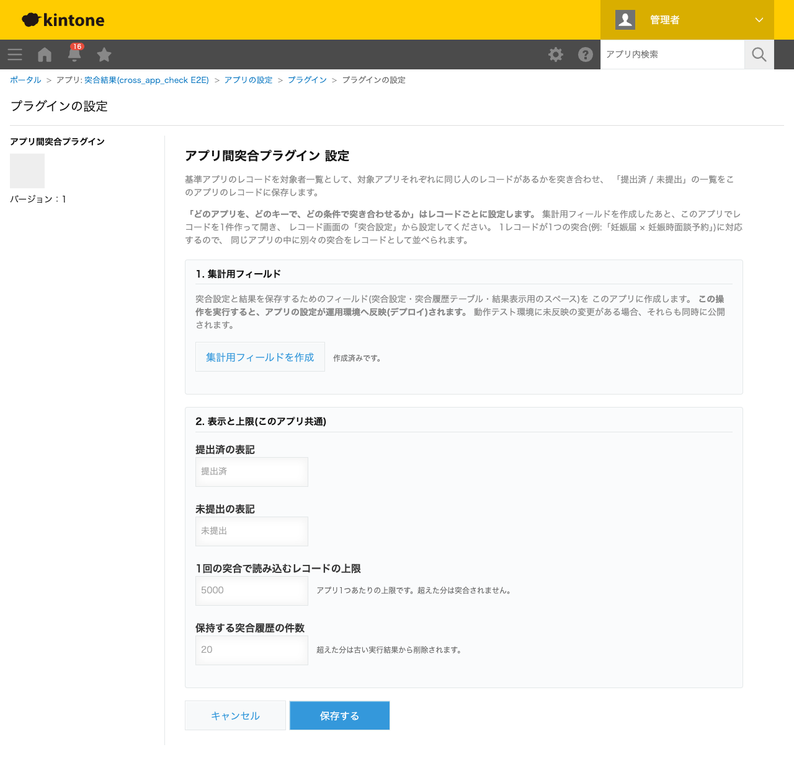

GovAppsプラグイン 安全性を確認できる無料kintoneプラグイン集
「基準アプリ」に登録されている人が、別の「対象アプリ」にも提出しているかどうかを突き合わせ、 提出済/未提出の一覧を作成するプラグインです。たとえば「妊娠届は出ているが、 妊娠時面談予約が出ていない人」を1クリックで洗い出せます。結果は集計アプリのレコードに JSONファイルとして履歴で残り、過去の実行結果と切り替えて見比べられます。
アプリと絞り込み条件の指定は、kintoneのレコード一覧のURLをコピーして貼り付けるだけ。 一覧画面で絞り込んでからURLをコピーすれば、その条件がそのまま突合の対象範囲になります。 クエリ記法を覚える必要はありません。
kintoneの関連レコード一覧フィールドは、レコード詳細画面で「この人の面談予約」を 1件ずつ見ることはできますが、一覧画面に並べたり、「予約が0件の人だけ」を絞り込んだりはできません。 グラフ・クロス集計も1つのアプリの中でしか集計できないため、アプリをまたいだ 「片方にしかない」の抽出はできません。結果として、両方のアプリからCSVを書き出して ExcelのVLOOKUPで突き合わせる、という手作業が残りがちです。
このプラグインは、その突き合わせをkintoneの中で完結させ、結果を記録として残すためのものです。
「妊娠届」アプリを基準アプリ、「妊娠時面談予約」アプリを対象アプリに設定し、宛名番号などの共通コードで突き合わせます。妊娠届を出しているのに面談予約のレコードがない人が「未提出」として一覧に並ぶので、そのまま連絡対象のリストとして使えます。「未提出のみ表示」に切り替えてCSVでダウンロードすれば、通知の宛先リストがそのまま作れます。
対象アプリは複数登録できます。「職員名簿」を基準アプリにして、「研修受講記録」「健診受診記録」「ストレスチェック回答」をそれぞれ対象アプリに設定すると、1つの表に「誰が・何を・出しているか」が横並びで表示されます。対象アプリごとに絞り込み条件(クエリ)を設定できるので、「今年度分だけ」といった条件も指定できます。
突合結果は上書きされず、実行するたびに「突合履歴」テーブルへ1行ずつ追記されます。過去の実行結果はドロップダウンで切り替えて表示できるため、「先月時点では何人が未提出だったか」をあとから確認できます。督促の効果測定や、監査時の記録としても使えます。
対象アプリに同じキーのレコードが複数ある場合、「提出済(2件)」のように件数付きで表示され、最終提出日もあわせて表示されます。重複登録や再申請の確認に使えます。
突合の設定はレコードごとに持ちます。そのため、同じ集計アプリの中に「妊娠届×面談予約」「職員名簿×研修受講記録」といった別々の突合を、別レコードとして並べて管理できます。突合キーは「完全一致」で突き合わせます。数値フィールド同士であれば「1」と「01」は同じものとして扱いますが、文字列フィールドの場合は先頭のゼロも含めて一致する必要があります(宛名番号のように先頭ゼロに意味があるコードを壊さないための仕様です)。

「未提出のみ表示」のチェック、対象アプリでの絞り込み、突合キー・氏名でのキーワード検索ができます。表示中の内容はCSVでダウンロードできます。突合キーと状況のセルからは、元のアプリのレコードへ直接リンクします。

一覧のURLを貼って「このURLから読み込む」を押すと、アプリ名と絞り込み条件が読み取られて表示され、そのアプリのフィールドが選択肢に並びます。設定・実行・結果確認がレコード画面の中で完結します。

プラグイン設定画面で行うのは、集計用フィールドの作成と、アプリ全体で共通の表記・上限の設定だけです。
kintoneセキュアコーディングガイドラインに沿って実装時にチェックしています。特に重要な点は次のとおりです。
javascript:のような値が混入する経路を塞いでいます)。innerHTMLを一切使わず、createElementとtextContentのみで組み立てています。氏名や突合キーにHTML特殊文字が含まれていても、文字列として表示されます。=や+で始まる値の先頭にシングルクォートを付けて無害化しています(Excelで開いたときに数式として実行されるCSVインジェクションの対策)。kintone.api()非対応と明記しているため同一オリジンへのfetchを使いますが、URLはkintone.api.url()で組み立て、POSTにはCSRFトークンを付与しています。詳細な確認項目・確認日は下記GitHubのチェックリストに全項目を掲載しています。
「突合を実行」ボタンを押すたびに、基準アプリと各対象アプリからレコードを取得します。 レコード取得は1回のAPIで最大500件のため、API実行数はおおよそ (基準アプリの件数 ÷ 500) + Σ(対象アプリの件数 ÷ 500) + 3 回です (末尾の3回は、結果JSONのアップロード・集計アプリのレコード取得・レコード更新)。 たとえば基準アプリ1,200件・対象アプリ2つが各800件の場合、1回の実行で約10回のAPIを消費します。 自動実行は行わないため、ボタンを押さない限りAPIは消費しません。